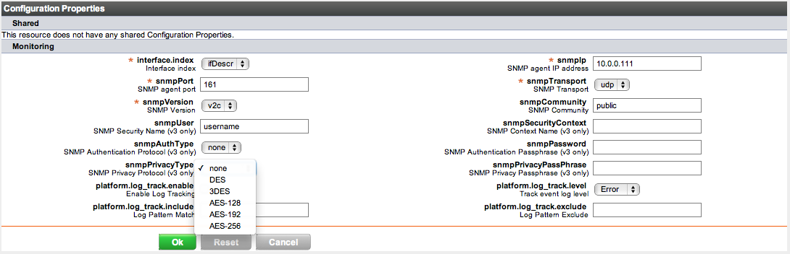

Topics marked with * relate to features available only in vFabric Hyperic.
Monitoring a Network Device
Hyperic's Network Device plugin monitors SNMP-capable devices on your network.
The Network Device plugin uses SNMP GET requests to obtain resource statistics for the monitored device. If you want to create events for SNMP traps issued by a device, you can configure it to send traps to the Hyperic Agent that manages the it. Note however that it is not necessary to receive traps to obtain device metrics.
The indented list below illustrates the hierarchy of Hyperic resource types that map to network device entities. Each resource type is described below in Network Device Resources and the Hyperic Inventory Model.
Network Device
Network Device Interface
Network Device Resources and the Hyperic Inventory Model
The table below lists the resource types in Hyperic that map to managed network device entities. The right column indicates the inventory level for each type in the Hyperic inventory model.
| Hyperic Resource Type | Description | Hyperic Inventory Type |
| Network Device | An SNMP-capable device. n | platform |
| Network Device Interface | An interface on the network device. | platform service |
Note: For more information about the managed resource hierarchy, see Resources, Resource Types and Inventory Types.
Configuration Instructions
Step 1 - Configure the Network Device in Hyperic
In this step, you configure a platform of type "Network Device" in Hyperic to represent the device you wish to monitor, and select a Hyperic Agent to collect device metrics.
To create a platform for the remote device or host:
- Select New Platform from the Tools menu.
- Click the thumbnail below to see the New Platform page.
- Click the thumbnail below to see the New Platform page.
- Enter a name for your platform.
- Select "Network Device" from the Platform Type pulldown.
- Enter the FQDN of the network device or host .
- Select the Hyperic Agent that will monitor the SNMP device from the Agent Connection pulldown list.
- Note: The agent must be able to connect to the SNMP port on the SNMP device.
- Enter the IP address of the network device. Do not use 127.0.0.1, even if the device is local to the agent being used for the SNMP connection.
- The netmask or MAC address of the device or server may be required depending on the configuration of the device.
- Click OK.
- The Configuration Properties page for the Network Device platform appears. See Configuration Properties Page for a screenshot.
- On the Configuration Properties page, enter values for for the options that apply to the version of SNMP you selected above. Configuration options are defined below in Network Device Configuration Options.
- After supplying the configuration data, click OK.

At this point, the plugin should start reporting metrics for the network device and the interfaces on it. As desired, you can extend monitoring by perform one or more of the optional steps described in:
- Step 2 - Configure Tracking of Trap Events (Optional)
- Step 3 - Configure Alert Definitions (Optional)
- Step 4 - Define Dependency Relationships (Optional)
Configuration Properties Page
The Configuration Properties page for the Network Device platform type is shown below.

Network Device Configuration Options
The tables below define the options in the configuration schema for the Network Device platform type. These are the resource attributes that are displayed, and may be edited, on the Configuration Properties page for a Network Device, shown above.
| name | description | default | optional | type | Notes | Parent Schema |
|---|
| interface. index |
Interface Index | ifDesc | no | Description table that maps a device's user friendly name to an SNMP index. Values: ifDescr ifName ifAlias ifIndex |
net device plugin |
| snmpIp |
SNMP agent IP address | 127.0.0.1 | |
snmp | ||
| snmpPort | SNMP agent port | 161 | |
snmp | ||
| snmpTransport | SNMP Transport | |
|
enum | Allowable values: udp, tcp | snmp |
| snmpVersion | SNMP Version | |
enum | Allowable values: v2c, v1, v3 | snmp | |
| snmpCommunity | SNMP Community | public | |
|
snmp | |
| snmpUser | SNMP username (v3 only) | username | true | |
snmp | |
| snmpPassword | SNMP password (v3 only) | password | true | secret | |
snmp |
| snmpAuthType | SNMP auth type (v3 only) | |
true | enum | Allowable values: md5, sha | snmp |
Step 2 - Configure Tracking of Trap Events (Optional)
This step has instructions for enabling the Hyperic Agent to receive traps from a Network Device and to log events for traps it receives. If you do not wish to receive traps from the device, skip to the next step.
- To enable the Hyperic Agent to receive traps, add the following line to its agent.properties file:
snmpTrapReceiver.listenAddress=udp:0.0.0.0/1620.
Privileges Required for Default SNMP Port
The Hyperic Agent's default UDP port for receiving traps is 162, in the privileged range, which the agent cannot access unless it runs as as root (or as an Administrative user on Windows). If you run the agent under the context of an non-administrative user, configure a non-privileged port to receive SNMP traps, by adding this property to its agent.properties file.snmpTrapReceiver.listenAddress=udp:0.0.0.0/162
This enables the agent to receive traps through any interface on the platform at UDP port 1620. If desired, you can specify an specific interface's IP address, or different port in the unprivileged range (1024 or above). Restart the Hyperic Agent after defining the listen address.
Note: If you try to check that the SNMP port is open at this point, netstat will not show it open. Once you complete all steps in this procedure netstat output will produce expected results.
- On the network device:
- Verify that traps are enabled on the network device.
- Set up the Hyperic Agent as a trap destination on the network device, supplying the Hyperic Agent's IP address and the SNMP port configured for the agent in the previous step.
- On the Configuration Properties page for the network device in Hyperic:
- Checkmark the Enable Log Tracking option in the "Monitoring" section of the page.
- In the Track event log level pull-down, select the severity level threshold to limit tracking to traps with that level or higher. Select:
- Error — To track traps whose SNMP level is "Error" or higher. (Traps with SNMP severity level "Error", "Critical", "Alert", or "Emergency" will be tracked).
- Warn — To track traps whose SNMP level is "Warning" or higher. (Traps with SNMP severity level "Warning", "Error", "Critical", "Alert", or "Emergency" will be tracked).
- Info — To track traps whose SNMP level is "Informational" or higher. (Traps with SNMP severity level "Informational", "Warning", "Error", "Critical", "Alert", or "Emergency" will be tracked).
- Debug — "Debug" to track all traps received, regardless of severity.
- Enter a regular expression in Log Pattern Match to further filter the traps tracked to those that match the expression.
- Enter a regular expression in Log Pattern Exclude to further filter the traps tracked to exclude those that match the expression.
- Click OK.
For information about how to view log events, see Set Up Log Tracking for a Resource.
Step 3 - Configure Alert Definitions (Optional)
Create alert definitions as desired for your managed network device resources. You can base alerts on device metrics, and on device traps, if you have configured the device to send traps to the Hyperic Agent.
For information about creating alerts, see Define an Alert for a Resource.
Step 4 - Define Dependency Relationships (Optional)
Available only in vFabric Hyperic
In vFabric Hyperic, if operating system platforms in your environment depend on the Network Device platform, you can define those dependencies using the Network Host Dependency Manager. This optional configuration is useful when vFabric Hyperic's hierarchical alerting feature is enabled.
With hierarchical alerting, the alert evaluation process for a resource takes into account the availability and alert status of the resource's parent. If you configure the relationship between a Network Device and the operating system platforms that depend on it, Hyperic will take the availability of the Network Device into account when evaluating alerts triggered for the operating system platforms - and so avoid firing redundant alerts when a problem with the Network Device makes dependent resources unavailable.
The Network Host Dependency Manager is available in the "Plugins" section on the Administration tab of the vFabric Hyperic user interface.
For information about hierarchical alerting, see Manage Alert and Notification Volume. For instructions, see the help page for the Network Host Dependency Manager.
Management Functions
The Network Device platform type is managed by Hyperic's netdevice plugin and performs the following functions:
Auto-Discovery
The netdevice plugin discovers each interface on the device, and creates a platform service of type "Network Device Interface" for each. The plugin discovers the values of the following properites for each interface.
- IP Address
- Netmask
- Maximum Transmission Unit
- Physical Address - macaddress
- Bandwidth - Interface speed
- Interface Name
The name of a Network Device Interface resource is forming by concatenating the following resource data:
- The parent Network Device's Fully Qualified Domain Name.
- The parent Network Device's Fully Qualified Domain Name.
- The Network Device Interface's Interface Name.
- The string "Interface".
- The Network Device Interface's Physical Address.
For example, this name:
sfo-gw.hyperic.net sfo-gw.hyperic.net bgroup0/0 Interface (0:23:9c:81:10:e)
is for a Network Device Interface whose:
- Parent Network Device's Fully Qualified Domain Name is sfo-gw.hyperic.net.
- Interface Name is bgroup0/0.
- Physical Address is 0:23:9c:81:10:e.
Metric Collection
The sections below define the metrics supported by the Network Device plugin.
You can view the current metric collection settings for a resource type on its Monitoring Defaults page — these are the default metric collection settings for all resources in inventory of the resource type.
Note that any modification to resource type's monitoring defaults will automatically apply to all resources of that type in inventory. Although not recommended as a general practice, it is possible to configure metric collection settings for an individual resources, overwriting the defaults for the resource type. For this reason, when considering changes to a resource type's monitoring defaults, be aware that updates will affect resources whose default settings have been customized: Resource-level metric collection settings are overwritten when the resource type monitoring defaults are modified. |
Network Device Metrics
Click the thumbnail below to view the Monitoring Defaults page for the Network Device platform service.

| Metric Name |
Definition |
|---|---|
| Availability |
|
| Engine Uptime | |
| Uptime | |
| Bytes Received Bytes Received per Minute |
|
| Bytes Sent Bytes Sent per Minute |
|
| IP Forwards IP Forwards per Second |
The number of input datagrams for which this entity was not their final IP destination, as a result of which an attempt was made to find a route to forward them to that final destination. In entities which do not act as IP routers, this counter will include only those packets which were Source-Routed via this entity, and the Source-Route option processing was successful." |
| IP Fragmented Creates IP Fragmented Creates per Second |
The number of IP datagram fragments that have been generated as a result of fragmentation at this entity." |
| IP Fragmented Failures IP Fragmented Failures per Second |
The number of IP datagrams that have been discarded because they needed to be fragmented at this entity but could not be, e.g., because their Don't Fragment flag was set." |
| IP Fragmented OK IP Fragmented OK per Second |
The number of IP datagrams that have been successfully fragmented at this entity. |
| IP In Address Errors IP In Address Errors per Second |
"The number of input datagrams discarded because the IP address in their IP header's destination field was not a valid address to be received at this entity. This count includes invalid addresses (e.g., 0.0.0.0) and addresses of unsupported Classes (e.g., Class E). For entities which are not IP routers and therefore do not forward datagrams, this counter includes datagrams discarded because the destination address was not a local address. |
| IP In Delivers IP In Delivers per Second |
The total number of input datagrams successfully delivered to IP user-protocols (including ICMP) |
| IP In Discards IP In Discards per Second |
The number of input IP datagrams for which no problems were encountered to prevent their continued processing, but which were discarded (e.g., for lack of buffer space). Note that this counter does not include any datagrams discarded while awaiting re-assembly." |
| IP In Header Errors IP In Header Errors per Second |
The number of input datagrams discarded due to errors in their IP headers, including bad checksums, version number mismatch, other format errors, time-to-live exceeded, errors discovered in processing their IP options, etc. |
| IP In Receives IP In Receives per Second |
The total number of input datagrams received from interfaces, including those received in error. |
| IP In Unknown Protocol IP In Unknown Protocol per Second |
The number of locally-addressed datagrams received successfully but discarded because of an unknown or unsupported protocol. |
| IP Out Discards IP Out Discards per Second |
The number of output IP datagrams for which no problem was encountered to prevent their transmission to their destination, but which were discarded (e.g., for lack of buffer space). Note that this counter would include datagrams counted in ipForwDatagrams if any such packets met this (discretionary) discard criterion. |
| IP Out No Routes IP Out No Routes per Second |
The number of IP datagrams discarded because no route could be found to transmit them to their destination. Note that this counter includes any packets counted in ipForwDatagrams which meet this `no-route' criterion. Note that this includes any datagrams which a host cannot route because all of its default routers are down. |
| IP Out Requests IP Out Requests per Second |
The total number of IP datagrams which local IP user-protocols (including ICMP) supplied to IP in requests for transmission. Note that this counter does not include any datagrams counted in ipForwDatagrams. |
| IP Reassembles Failed IP Reassembles Failed per Second |
The number of failures detected by the IP re-assembly algorithm (for whatever reason: timed out, errors, etc). Note that this is not necessarily a count of discarded IP fragments since some algorithms (notably the algorithm in RFC 815) can lose track of the number of fragments by combining them as they are received. |
| IP Reassembles OK IP Reassembles OK per Second |
The number of IP datagrams successfully re-assembled. |
| IP Reassembles Required IP Reassembles Required per Second |
The number of IP fragments received which needed to be reassembled at this entity. |
| Number of Processes | |
| Number of Users |
Network Interface Metrics
Click the thumbnail below to view the Monitoring Defaults page for the Network Device Interface platform service type.
{kind=link}
| Metric | Definition |
|---|---|
| Admin Status | The desired state of the interface. The testing(3) state indicates that no operational packets can be passed. When a managed system initializes, all interfaces start with ifAdminStatus in the down(2) state. As a result of either explicit management action or per configuration information retained by the managed system, ifAdminStatus is then changed to either the up(1) or testing(3) states (or remains in the down(2) state)." |
| Availability | |
| Last Change | The value of sysUpTime at the time the interface entered its current operational state. If the current state was entered prior to the last re-initialization of the local network management subsystem, then this object contains a zero value. (units="jiffys") |
| Operational Status | The current operational state of the interface. The testing(3) state indicates that no operational packets can be passed. If ifAdminStatus is down(2) then ifOperStatus should be down(2). If ifAdminStatus is changed to up(1) then ifOperStatus should change to up(1) if the interface is ready to transmit and receive network traffic; it should change to dormant(5) if the interface is waiting for external actions (such as a serial line waiting for an incoming connection); it should remain in the down(2) state if and only if there is a fault that prevents it from going to the up(1) state; it should remain in the notPresent(6) state if the interface has missing (typically, hardware) components." |
| Bits Received Bits Received per Second |
|
| Bits Sent Bits Sent per Second |
The total number of packets that higher-level protocols requested be transmitted, and which were not addressed to a multicast or broadcast address at this sub-layer, including those that were discarded or not sent. Discontinuities in the value of this counter can occur at re-initialization of the management system, and at other times as indicated by the value of ifCounterDiscontinuityTime. |
| Bytes Received Bytes Received per Minute |
The total number of octets received on the interface, including framing characters. Discontinuities in the value of this counter can occur at re-initialization of the management system, and at other times as indicated by the value of ifCounterDiscontinuityTime. |
| Bytes Sent Bytes Sent per Minute |
The total number of octets transmitted out of the interface, including framing characters. Discontinuities in the value of this counter can occur at re-initialization of the management system, and at other times as indicated by the value of ifCounterDiscontinuityTime. |
| Inbound Errors Inbound Errors per Second |
For packet-oriented interfaces, the number of inbound packets that contained errors preventing them from being deliverable to a higher-layer protocol. For character- oriented or fixed-length interfaces, the number of inbound transmission units that contained errors preventing them from being deliverable to a higher-layer protocol. Discontinuities in the value of this counter can occur at re-initialization of the management system, and at other times as indicated by the value of ifCounterDiscontinuityTime. |
| Inbound Multicast Packets Inbound Multicast Packets per Second |
The number of packets, delivered by this sub-layer to a higher (sub-)layer, which were addressed to a multicast or broadcast address at this sub-layer. Discontinuities in the value of this counter can occur at re-initialization of the management system, and at other times as indicated by the value of ifCounterDiscontinuityTime. |
| Inbound Packet Discards Inbound Packet Discards per Second |
The number of inbound packets which were chosen to be discarded even though no errors had been detected to prevent their being deliverable to a higher-layer protocol. One possible reason for discarding such a packet could be to free up buffer space. Discontinuities in the value of this counter can occur at re-initialization of the management system, and at other times as indicated by the value of ifCounterDiscontinuityTime. |
| Inbound Packets Inbound Packets per Second |
The number of packets, delivered by this sub-layer to a higher (sub-)layer, which were not addressed to a multicast or broadcast address at this sub-layer. Discontinuities in the value of this counter can occur at re-initialization of the management system, and at othertimes as indicated by the value of ifCounterDiscontinuityTime. |
| Outbound Errors Outbound Errors per Second |
|
| Outbound Multicast Packets Outbound Multicast Packets per Second |
The total number of packets that higher-level protocols requested be transmitted, and which were addressed to a multicast or broadcast address at this sub-layer, including those that were discarded or not sent. Discontinuities in the value of this counter can occur at re-initialization of the management system, and at other times as indicated by the value of ifCounterDiscontinuityTime. |
| Outbound Packet Discards Outbound Packet Discards per Second |
|
| Outbound Packets Outbound Packets Queues |
|
| Outbound Packets Queues per Second Outbound Packets per Second |
Solving Problems
If the configuration is not accepted:
- Verify the IP address, SNMP port, SNMP version, and authentication settings, as applicable.
- Verify that the agent you selected for the proxy platform has network connectivity and can reach the SNMP port of the network device (check firewalls).
- Make sure that the community string configured for the proxy platform is the same as the community string the trap generator uses to send traps. If the strings do not match, traps cannot be sent to the proxy platform - instead, traps will be routed to the default platform, if that platform has log tracking enabled.
- Check the Hyperic Agent log file to make sure that the agent has opened the proper UDP port. If properly configured, you should see messages similar to:
2008-06-05 16:45:05,447 DEBUG [SNMPTrapReceiver] snmpTrapReceiver.listenAddress=udp:0.0.0.0/1620 2008-06-05 16:45:05,572 DEBUG [SNMPTrapReceiver] Add 1:10003 for 10.2.0.2-switch
- Check the troubleshooting tips in Troubleshoot Agent and Server Problems, in particular the Out-of-Sync Agent and Server Clocks section.